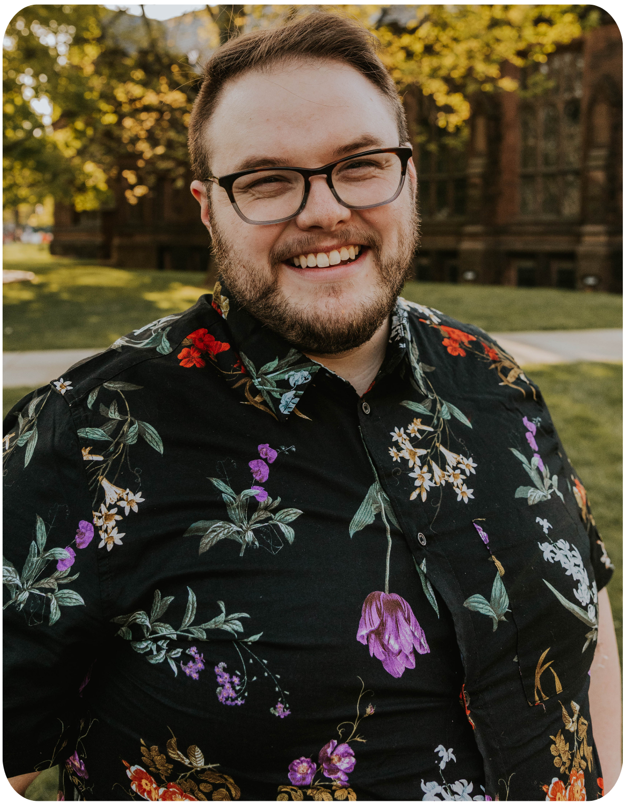

BIO
Kev Schneider is a tenor specializing in early music and choral singing. Passionate about connecting with varied audiences, they have travelled extensively to sing for audiences around the world. Recently, they have toured with the VOCES8 Scholars and Convoco; past tours have taken them around the United States, Europe, China, and Japan. They have also recently worked on several recordings, including a project with TENET, the Martin Mass for Double Choir with Fifth Avenue Presbyterian Church, a soon-to-be-released album with the Lux Choir (Affetto Records), and the GRAMMY-winning soundtrack, Maestro: Music of Leonard Bernstein (Deutsche Grammophon). Kev is a regular member of Re:Soundings, an innovative new choral group, and Convoco, a choral collective based in Philadelphia. They are on the roster of the Philadelphia Symphonic Choir, through which they have sung with The Philadelphia Orchestra for nine seasons. Kev has been in residence with the Spoleto Festival USA, through which they premiered Layale Chaker's opera “Ruinous Gods.” This season, they will be singing tenor solos in the Bach B minor Mass through that residency. An experienced church musician, Kev sings in the professional choir at St. James' Madison Avenue, the Chamber Choir of Fifth Avenue Presbyterian Church. and The Episcopal Church at Princeton. Kev is a graduate of Westminster Choir College, where their teachers included Thomas Faracco, Margaret Cusack, and Jay Carter. When not making music, they enjoy hiking and befriending dogs.
